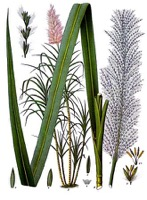

さとうきび（砂糖黍）の生産量 都道府県ランキング
1位から3位までと、とれた量
さとうきびが日本でいちばん多くとれるのは沖縄県です。76万5,800 tで、全国（137万7,000 t）の56%を占めます。

| 順位 | 都道府県 | 収穫量 | 全国に占める割合 |
|---|---|---|---|
| 1位 | 沖縄県 | 76万5,800 t | 56% |
| 2位 | 鹿児島県 | 61万1,500 t | 44% |
この数字について
- 分類：イネ科
- 全国の収穫量：137万7,000 t
- この数字が表すもの：収穫量（畑や田でとれた重さ）
- 調査：作物統計調査 作況調査（麦・豆・工芸農作物ほか） 令和7年産
- 2県分を調査（調査していない県は順位に入りません）
さとうきびの生産量について、よくある質問
- さとうきびの生産量が日本一の都道府県はどこですか？
- 沖縄県です。作物統計調査 作況調査（麦・豆・工芸農作物ほか）（令和7年産）で76万5,800 tでした。
- さとうきびの生産量ランキング2位・3位はどこですか？
- 2位は鹿児島県（61万1,500 t）です。
- さとうきびの全国の生産量はどれくらいですか？
- 137万7,000 t（令和7年産）です。